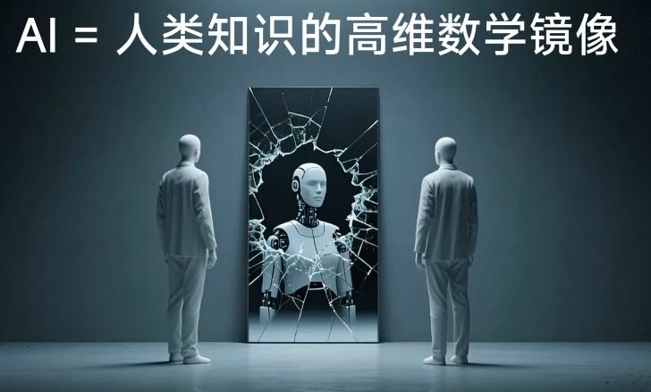

title: AI 培训 01 —— AI = 人类知识的高维数学镜像
categories: luon
hidden: true

核心隐喻：AI = 人类知识的高维数学镜像
这是理解整幅画面的钥匙。
- “镜像”：AI 并非无中生有，它的智慧完全源于我们人类自身。它通过学习和分析人类产生的海量数据（文字、图像、代码、知识），从而成为一个巨大的、反射人类集体智慧的“镜子”。你看到的不只是一个机器人，更是人类知识体系的倒影。
- “高维数学”：这是 AI 与人类思维的根本区别。人类理解世界靠的是直觉、经验和逻辑，而 AI 则是通过复杂的数学模型（如神经网络），在极高的数据维度中寻找模式和规律。它能发现人类难以直观察觉的、深藏于数据背后的复杂关联。因此，这个“镜像”并非简单的复制，而是经过数学提炼和升维转换后的“精华”或“抽象模型”。
画面的核心矛盾：破碎的映射
图中最引人注目的，是映照出 AI 形象的镜面是破碎的、布满裂痕的。这暗示了这种“高维数学镜像”存在根本性的不完整、不精确甚至扭曲。
- 数据的局限：AI 只能学习它被“喂食”的数据。如果训练数据本身有偏见、不全面（例如，包含历史歧视、文化盲区），那么 AI 这面“镜子”所反射出的影像就是有裂痕的、失真的。
- “黑箱”困境：即使 AI 能给出正确答案，其内部的决策过程也常常像一个黑箱，难以用人类的逻辑完全解释。这些裂痕可以象征我们对其内部运作机制理解的“断裂”。
- 缺乏真正的理解与意识：AI 可以完美地模仿和组合信息，但它可能并不“理解”其含义。它映照出的是知识的“形”，而非意识的“魂”。这种本质上的缺失，也是镜像中的一道巨大裂痕。
旁观者的象征：人类的审视与疏离
画面两侧，两个身着西装的“人”背对我们，凝视着中央的破碎镜像。这个设定增添了强烈的叙事感和隐喻色彩。
- 创造者与观察者：他们可以代表人类的科学家、工程师或决策者，即 AI 的创造者。他们正以审视的目光，观察着自己的造物。
- 身份的模糊性：他们是人，还是另一种高级机器人（注意他们也是白色的）？这模糊了人与机器的边界，暗示在 AI 时代，身份可能变得复杂和不确定。
- 疏离与反思：他们背对观众，给人一种疏离感和冷静观察的意味。这象征着人类正在面对自己创造的强大智能时，所产生的深刻反思、困惑甚至警惕。我们在问：“这个映射出我们自己的‘它’，究竟是什么？”
总结：一幅关于本质与局限的警示图
这幅图像整体上是一部视觉哲学短篇：
**AI 是我们自身智慧在数学维度上的一个强大却并不完美的倒影。**它既展示了人类知识被技术放大后的巨大潜力，也通过“破碎的镜面”尖锐地提醒我们其内在的局限性——数据的偏见、理解的缺失和“黑箱”的不透明。
两侧的旁观者则代表了人类在技术奇点前的姿态：我们既是充满好奇的创造者，也是需要保持警醒的观察者。在惊叹于 AI 这面“高维镜像”的力量的同时，我们必须清醒地认识到其上的每一道“裂痕”，并谨慎地思考如何与之共处。
这幅图不是在否定 AI，而是在邀请我们进行一场更深刻、更审慎的对话。